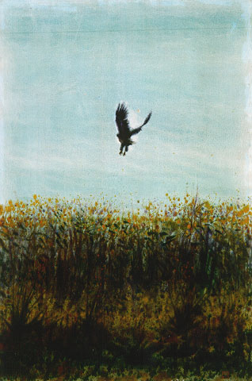

義助慰安婦 —— 李敖百件珍藏義賣藝術品（第87件） 品 名：H17. 林惺嶽「鷹」 預估價：10 萬 成交價：10 萬 說 明： 台灣畫家林惺嶽先生所畫別具情味的「鷹」。台灣的藝術發展可分兩階段：（一）日本人統治時期，當時畫家少有好的作品；（二）國民政府統治時期，有部份畫家走火入魔，專畫奇形怪狀的東西，實不足論。但也有在傳統中推陳出新而有成就的畫家，林惺嶽先生就是代表人物。 
台灣畫家林惺嶽先生所畫別具情味的「鷹」。台灣的藝術發展可分兩階段：（一）日本人統治時期，當時畫家少有好的作品；（二）國民政府統治時期，有部份畫家走火入魔，專畫奇形怪狀的東西，實不足論。但也有在傳統中推陳出新而有成就的畫家，林惺嶽先生就是代表人物。